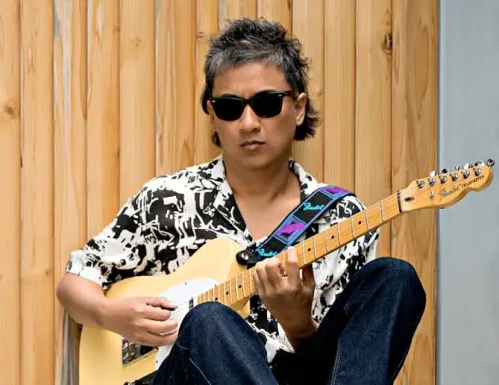

About Salvador, Franz
Creative, Supporting, Sincere.
Honorable, Talented and Masterful Lourdesians.
Hello! I am Franz Harvey B. Salvador.
I am currently 14 years old, and have lived in Pasig City for most of my life. I also visit my Grandma and my Aunt's houses during weekends and occassions.
My aspirations are to be a lawyer that overpowers everyone with sheer facts and knowledge, as I have always liked to debate people on certain facts and evidence. But, I also want to be an artist. Not being a serious artist, I just want to be skilled enough in it to impress people with my skill. I like to doodle and sketch alot (refer to my friends and my sketchbooks), so I feel like I want to pursue art as a 2nd degree.
My interests are many, One of them being piano. I have a friend (and groupmate) that plays piano, and I thought: "Why not learn to play piano myself? It seems fun.", and that's how I managed to become semi-good in piano. I also tried a bit of guitar, learning a little bit on the fretboard and chords, but nothing serious.
One of my many other interests is that I like creating fanfics of certain fandoms. I'm currently doing a Persona 5 Royal and RWBY fanfic, with a Oneshot Compilation and DDLC fanfic on the way.
Lastly, I like to play video games. I like to play with my friends on Roblox, with games such as: Forsaken, Outcome Memories, Pacer, and many more. Aside from Roblox, I also dabble a bit on minecraft, having made a medieval home, and a lot of redstone builds, many of them were failed.
About Sabarre, Immanuel
Creative, Supporting, Sincere.
Honorable, Talented and Masterful Lourdesians.
Immanuel Nicolo S. Sabarre
9-BL. Apollinaris Of Posat
| Hello! I am Immanuel From 9 Blessed Apollinaris of Posat |
Where do i live? |
I am born on November 11 , 2011 at Pasig city and through out my life God gave me memorable
experiences
in the Philippines.
One of the most important parts of my life is my Education, espesially
my time
in LSM. I have been in LSM for 10 years, ever
since kindergarden. Through out my years in
LSM they
taught me the 3 core values which are Gospel Brotherhood, Marian
Spirituality , and
Christian
Leadership.They taught me to become a brother to all even when it comes down to the smallest
ant and
to the worst bully. Additionally LSM helped shaped me to become a better musician because of the
clubs ,
bands , and etc.
|
I have lived at Cainta Rizal most of my life, as it has been my home filled with many different
experiences from good and bad.
However if there are strong typhoons alerted to us, we move
to Quezon
City to keep us safe from the calamities. These 2
places gave me good and bad experiences in
my
life, so i am happy that i have those properties. I am so thankful for these places
because
they
gave me the safety and comfortness to my liking. Because of these experiences through out my
life
i
became more attached to these places because they played a significant role in my life by
providing
shelter and safety.
|
| What's my Interest? |
Achievements |
All my life i was mostly interested in musical Instruments such as Piano , guitar , and
drums.
Ever
since when i was little i was always intrested and never quit on learning piano.
I
eventually
discovered a talent given by God which is playing by ear. I discovered this when i was 8,
when i
tried playing listening to a song and after listening to it i somehow played it. After a few
years of
piano,
i am currently now trying to teach myself guitar and drums while having a band in the
school.
|
My most recent achievement in my academic life is that i got honors during 4th quarter grade 8.
This
is my first honors in my academic life in LSM. Another achievement i got is that my band
performed
in multiple school events, Such as: Batch project, Christmas party, fair , etc. Additionally i
also did
my recital
last year december and this year July. I also play in the church to bring my
service to
God's Almighty grace.
|

Ely Buendia
Ely Buendia is my filipino insparation because he inspired me to learn more instruments like guitar instead of being stuck only playing piano. Additionally he is also part of my all time favorite band Eraserheads and has played a big role inspiring me more in music
About Perez, Jian
Creative, Supporting, Sincere.
Honorable, Talented and Masterful Lourdesians.
- Status:Student
- School:Lourdes School of Mandaluyong
- Age:14
- Birthday: December 02, 2010
- Nationality:Filipino
About me:
Hello, I am Jian Richie S. Perez, in grade 9-Bl. Mark of Aviano, In the private school of
LSM. I been livin in Pasig, Greenwoods executive village however, I began to live in a condo at Kai Garden.
One of my favorite habit is that I'll take long walks around my house or within the school grounds.
Another thing that I like to do is swimm in the water and represent my school in every competitions.
However, I mostly swimm just to stay fit and strong, not to become some famous athelete and be well known
Internationally or be the number one swimmer in the country. I wanna become a doctor, focused on
physiatrist,
a doctor who studies the mind, and behavior, to help people with mental, emotional,
and behavioral disorders. They can also find ways to improve the patient living conditions. The reason why I
wanna be a doctor is to follow the foot steps of my mother and father since
my mother is a high ranking doctor in the mental hostpital
Who is your selected Filipino Inspiration?
Fe Villanueva del Mundo
A pediatrician doctor who made the pediatric hospital in the country,
and she focused on changing the modern child healthcare system in the Philippines.
She also focused on researching diseases such as dengue, polio and measles. During the Japan invasion,
she joined the International Red cross, but was detained in UST for foreign nationals. However this
doesnt stop her as she makes a hospice within the University,
and her actions/medical assistance led her to be known as "The Angel of Santo Tomas"
The reason why Dr. Del Mundo inspire me, is because no matter how big or small, necessasary or not
needed, easy or hard, you must always execute that role, 100%. Since every role will always benifits someone